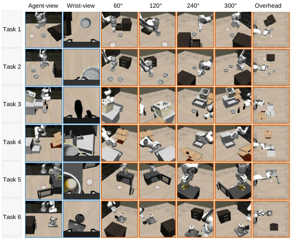
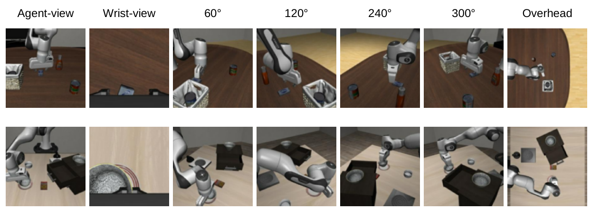
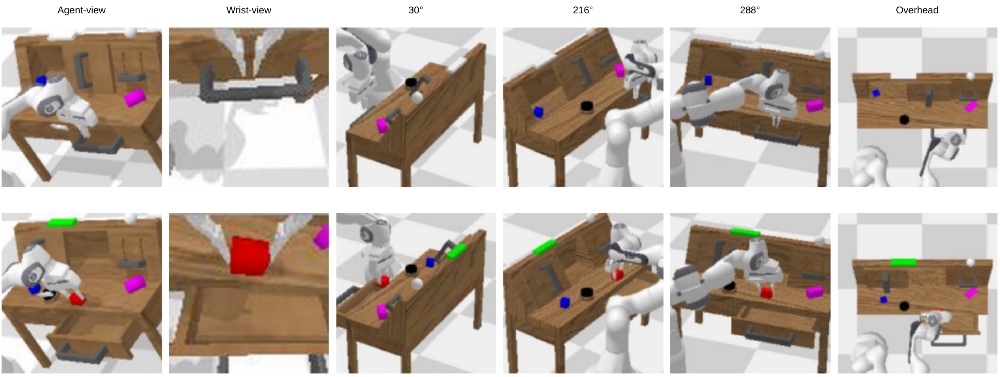

Occluded tasks remain a bottleneck in robot manipulation. Existing solutions either deploy additional physical cameras requiring training-inference camera parity, or rely on explicit 3D reconstruction with high computational cost. Moreover, both approaches rely on standard agent-view and wrist-view observations, while failing to capture occlusion information and future scene evolution. To this end, we propose UniviewVLA, a unified multiview Vision-Language-Action model with world modeling, which infers multiview scene evolution for action prediction from only standard two-camera observations. We demonstrate that by leveraging generated multiview future views from the world model, UniviewVLA reveals occluded cues and models future scene evolution, improving action prediction and removing the need for extra hardware or explicit reconstruction. Besides, to accelerate inference while preserving prediction accuracy, UniviewVLA develops Motion-Informative Token Compression, which compresses each generated view from 625 to 16 tokens and reduces per-view latency from 6–7s to 0.2–0.3s. UniviewVLA also proposes training-free Action-Entropy View Selection, which dynamically identifies the most action-informative view at different inference stages. Extensive experiments show that UniviewVLA achieves 95.8% on LIBERO and 4.60 on CALVIN ABCD→D, both standard occlusion-free benchmarks. On customized occlusion-focused tasks, it improves success rate from 40.0% to 73.3%, and average real-robot success rate by 33.4 points, demonstrating stronger occlusion-focused performance without sacrificing standard occlusion-free benchmarks.
To further evaluate the importance of multiview information, we construct six customized occlusion-focused tasks that hide action-critical cues from the standard viewpoints. Specifically, we follow the LIBERO BDDL format to design occluded manipulation scenes and collect multiview demonstrations with a hardware-in-the-loop teleoperation setup based on a 3D SpaceMouse. Each task contains 60 demonstrations. The table below lists the corresponding language instructions, and the videos show UniviewVLA rollouts.
| ID | Task | Language Instruction |
|---|---|---|
| 1 | Scene1 Bowl | open the bottom drawer of the cabinet and put the bowl in it |
| 2 | Scene2 Bowl | put the black bowl on the left plate |
| 3 | Scene4 Wine | pick up the wine bottle at the back and put it on the wine rack |
| 4 | Scene4 Drawer | put the black bowl at the left in the bottom drawer of the cabinet and close it |
| 5 | Scene7 Mug | put the yellow and white mug on the plate |
| 6 | Scene8 Moka | turn off the stove and put the moka pot on top of the cabinet |

For standard simulation benchmarks, we obtain multiview supervision by replaying recorded demonstrations with additional workspace cameras in the simulator. LIBERO uses 60°, 120°, 240°, 300°, and overhead views, as shown below. Since the rear tabletop side in CALVIN is mostly redundant or weakly informative, we use more widely spaced views at 30°, 216°, 288°, and overhead.

